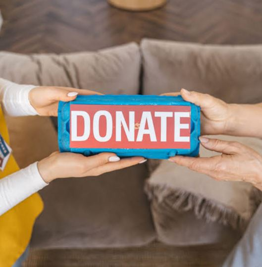
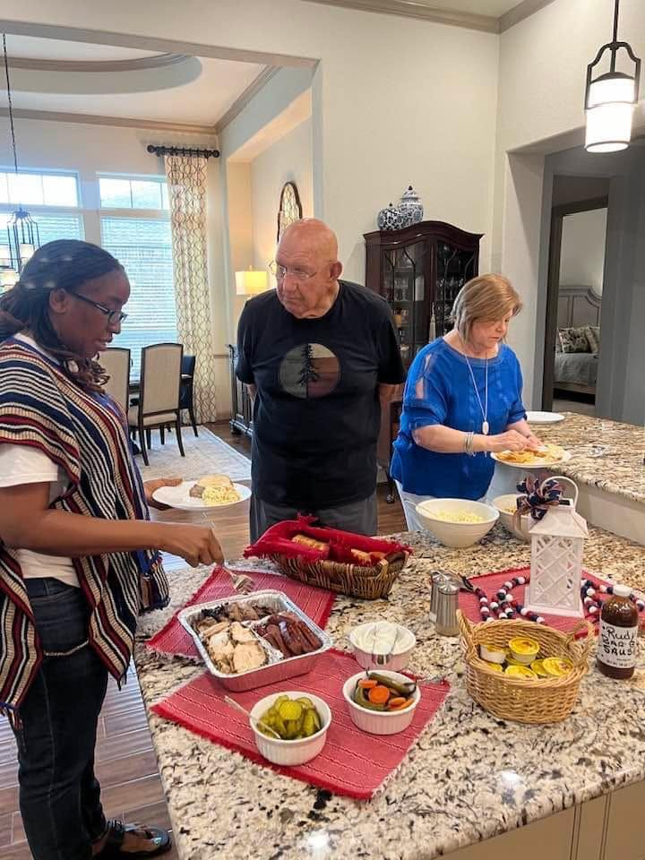
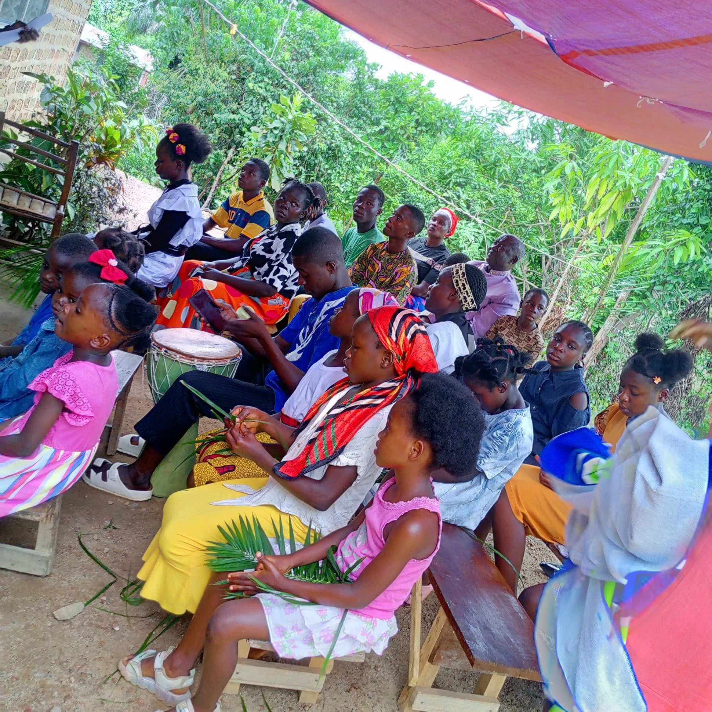

WELCOME TO
New Hope Ministries Foundation
We exist to share the love of Christ and bring hope, restoration and transformation to individuals, families and communities.
We exist to share the love of Christ and bring hope, restoration and transformation to individuals, families and communities.
We are committed to holistic transformation through the Gospel and practical support that empowers lives and strengthens communities.
Sharing the good news of Jesus Christ and leading people to salvation.
Growing believers through teaching, mentoring and spiritual guidance.
Providing quality education and equipping minds for a better future.
Promoting health, wellness and care for the sick and vulnerable.
Empowering communities through sustainable projects and partnerships.
Supporting agricultural initiatives for food security and economic growth.

New Hope Ministries Foundation began as a small church outreach and has grown into a foundation walking alongside families across dozens of communities. Every program we run, from the classroom to the clinic to the field, is rooted in the same conviction: people are worth investing in.
Whatever you have to give, time, resources, or prayer, there's a place for you in this work.

Give one-time or monthly to fund programs that restore hope in real, lasting ways.
Give Today
Join a local team or short-term mission trip and serve alongside our staff.
Sign Up
Churches and organizations can partner with us on long-term community projects.
Start A PartnershipThrough the education program, my daughter is the first in our family to finish secondary school. This foundation gave us a future we couldn't have built alone.

The health outreach team treated my whole village when we had no clinic nearby. They didn't just give medicine, they gave dignity.

The agriculture training changed how our cooperative farms. We went from struggling for food to selling surplus at market.